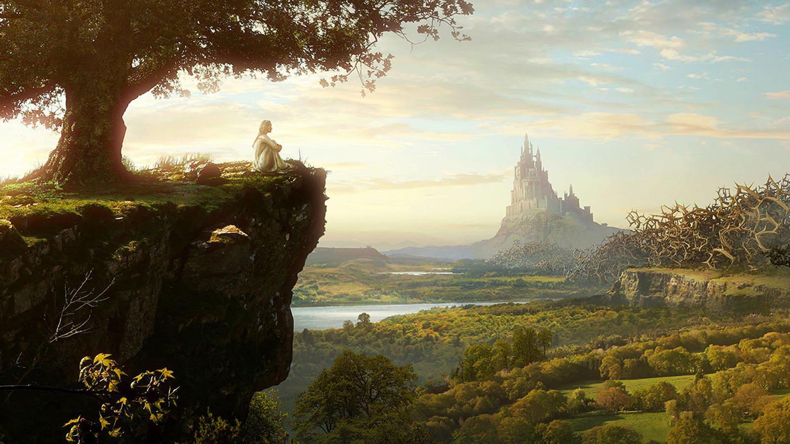

The King gives you a map to The Wizards evil hideout and warns you about The Wizards pet dragons. You take the map and start your mission. Your realize that there are two routes to take, which one will you chose?
Take the first route through the "Forest of Doom"Take a boat to the short cut passing the "Forest of Doom" called the "River of Bliss" 